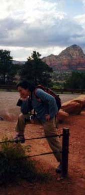

セドナ日記 〜 第２日目 98.5.5
エアポートメサから見る夕日I
 昨日、教会であった、老夫婦も、エアポートメサの夕日はきれいだと教えてくれていた。今日の夕日は、エアポートメサから見ることにする。
エアポートメサはボルテックスの一つで、岩山である。ただ、あまり高くなく、簡単に頂上まで登ることができる。ダウンタウンからは84Aを西に向かい、AIRPORT RDを左折、少し坂を登ると、左側に赤い岩山が見えてくる。これがエアポートメサである。小さな駐車場に車をとめる。「Overlook Point」という立て看板がある。トレイルも点線で書かれているが、その岩山（丘）はどこからでも、登れそうである。あんまり道を気にする必要はない。５分もあれば、頂上である。これがなかなか景色がいい。ちょうどセドナの町の中心地、へそ見たいな場所にある高台になる。町一帯を見渡すことができた。遠くには、ベルロック、カシドラルロックがみえる。そして、セドナの町の背景にも、赤い岩山が連なっているのだった。
日がくれるのを待つ。太陽が、西の地平線に近づくと、足元の赤い岩はさらに赤みを増す。空の青色は、青、紫、赤のグラデーションになる。すこし雲が出ていて、一度雲に隠れる。再び現われるがすぐ太陽は地平線に吸い込まれていった。セドナの町の明りが、輝き出した。今、日本は何時だろう。この沈んでいく太陽をいま、日本にいる人達は、朝日として見ているのか？それとも、まだ夜か？わからずじまいだが、そんなことを考えていた。